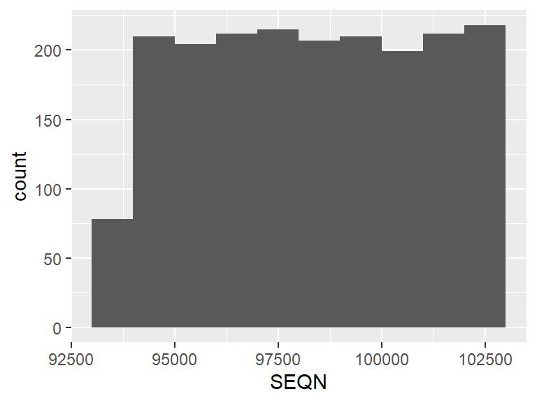
Codebook for nhanes_clean
Autogenerated data summary from dataReporter
Data report overview
The dataset examined has the following dimensions:
| Feature | Result |
|---|---|
| Number of observations | 1965 |
| Number of variables | 16 |
Codebook summary table
| Label | Variable | Class | # unique values | Missing | Description |
|---|---|---|---|---|---|
| Subject ID: Individual Identifier | SEQN | numeric | 1965 | 0.00 % | |
| Age in years at screening (40-65) | RIDAGEYR | numeric | 26 | 0.00 % | |
| Sex: male or female | RIAGENDR | factor | 2 | 0.00 % | |
| Race / Ethnicity | RIDRETH1 | factor | 5 | 0.00 % | |
| Blood lead (µg/dL) | LBXBPB | numeric | 252 | 0.00 % | |
| Blood cadmium (µg/dL) | LBXBCD | numeric | 111 | 0.00 % | |
| Blood manganese (µg/dL) | LBXBMN | numeric | 915 | 0.00 % | |
| Systolic BP, first reading | BPXSY1 | numeric | 42 | 0.00 % | |
| Diastolic BP, first reading | BPXDI1 | numeric | 28 | 0.00 % | |
| lab_missing | integer | 2 | 0.00 % | ||
| bp_missing | integer | 2 | 0.00 % | ||
| Blood lead after outlier removal | LBXBPB_clean | numeric | 252 | 0.00 % | |
| Blood cadmium after outlier removal | LBXBCD_clean | numeric | 111 | 0.00 % | |
| Blood manganese after outlier removal | LBXBMN_clean | numeric | 915 | 0.00 % | |
| Systolic BP, first reading after outlier removal | BPXSY1_clean | numeric | 42 | 0.00 % | |
| Diastolic BP, first reading after outlier removal | BPXDI1_clean | numeric | 28 | 0.00 % |
Variable list
SEQN
Subject ID: Individual Identifier
| Feature | Result |
|---|---|
| Variable type | numeric |
| Number of missing obs. | 0 (0 %) |
| Number of unique values | 1965 |
| Median | 98334 |
| 1st and 3rd quartiles | 95997; 100638 |
| Min. and max. | 93711; 102954 |
RIDAGEYR
Age in years at screening (40-65)
| Feature | Result |
|---|---|
| Variable type | numeric |
| Number of missing obs. | 0 (0 %) |
| Number of unique values | 26 |
| Median | 54 |
| 1st and 3rd quartiles | 47; 60 |
| Min. and max. | 40; 65 |
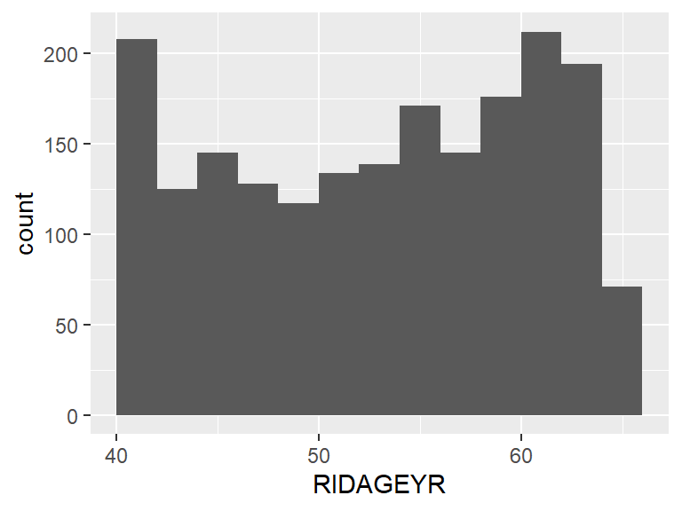
RIAGENDR
Sex: male or female
| Feature | Result |
|---|---|
| Variable type | factor |
| Number of missing obs. | 0 (0 %) |
| Number of unique values | 2 |
| Mode | “Female” |
| Reference category | Male |
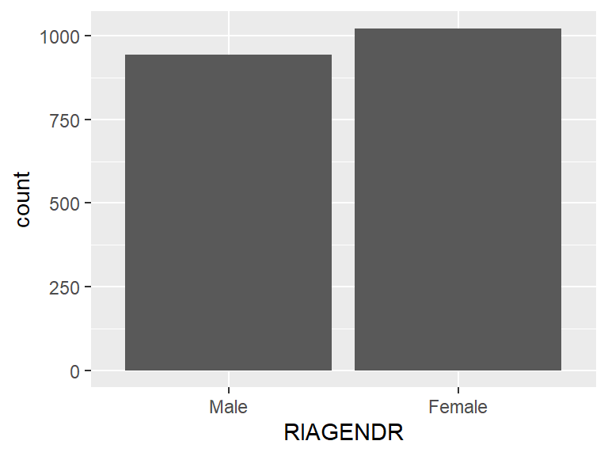
- Observed factor levels: "Female", "Male".
RIDRETH1
Race / Ethnicity
| Feature | Result |
|---|---|
| Variable type | factor |
| Number of missing obs. | 0 (0 %) |
| Number of unique values | 5 |
| Mode | “Non-Hispanic White” |
| Reference category | Mexican American |
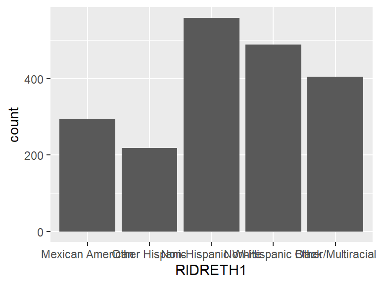
- Observed factor levels: "Mexican American", "Non-Hispanic Black", "Non-Hispanic White", "Other Hispanic", "Other/Multiracial".
LBXBPB
Blood lead (µg/dL)
| Feature | Result |
|---|---|
| Variable type | numeric |
| Number of missing obs. | 0 (0 %) |
| Number of unique values | 252 |
| Median | 0.94 |
| 1st and 3rd quartiles | 0.61; 1.33 |
| Min. and max. | 0.12; 2.79 |
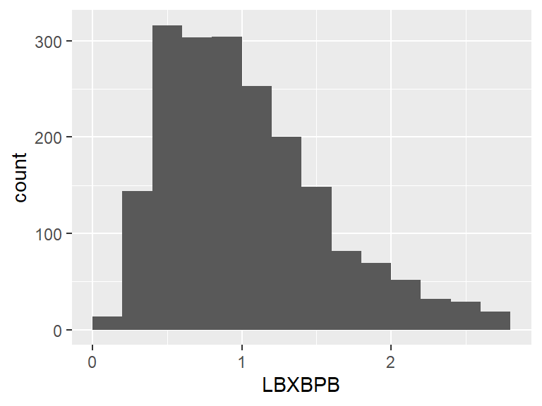
LBXBCD
Blood cadmium (µg/dL)
| Feature | Result |
|---|---|
| Variable type | numeric |
| Number of missing obs. | 0 (0 %) |
| Number of unique values | 111 |
| Median | 0.3 |
| 1st and 3rd quartiles | 0.18; 0.48 |
| Min. and max. | 0.07; 1.21 |
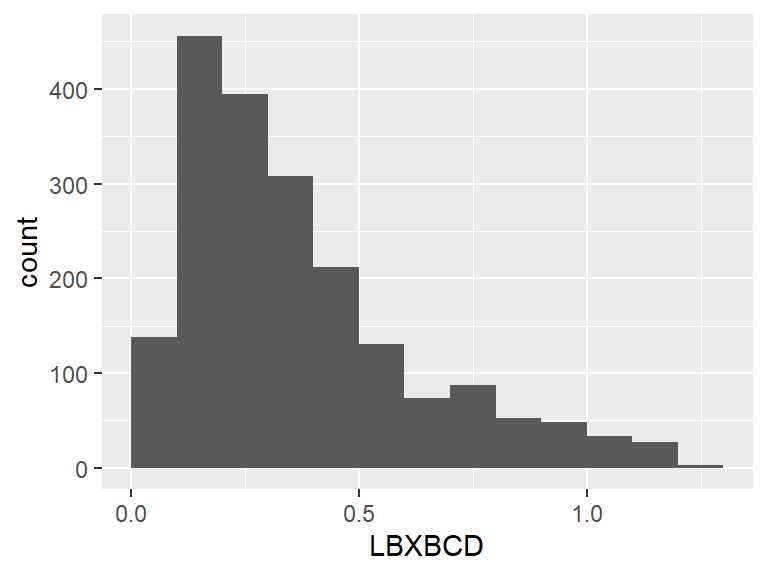
LBXBMN
Blood manganese (µg/dL)
| Feature | Result |
|---|---|
| Variable type | numeric |
| Number of missing obs. | 0 (0 %) |
| Number of unique values | 915 |
| Median | 9.32 |
| 1st and 3rd quartiles | 7.46; 11.51 |
| Min. and max. | 3.07; 18.34 |
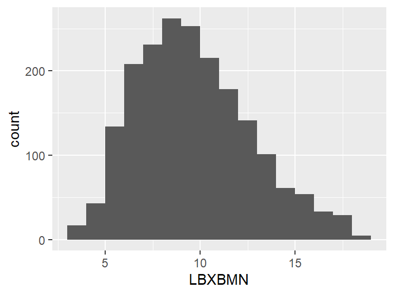
BPXSY1
Systolic BP, first reading
| Feature | Result |
|---|---|
| Variable type | numeric |
| Number of missing obs. | 0 (0 %) |
| Number of unique values | 42 |
| Median | 126 |
| 1st and 3rd quartiles | 116; 138 |
| Min. and max. | 88; 170 |
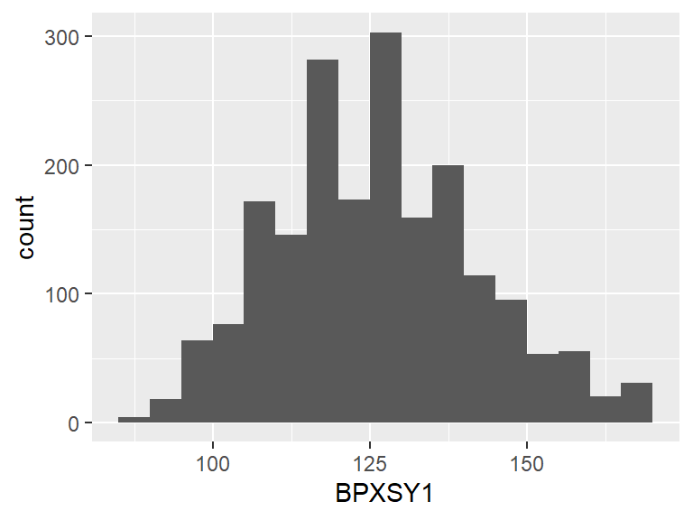
BPXDI1
Diastolic BP, first reading
| Feature | Result |
|---|---|
| Variable type | numeric |
| Number of missing obs. | 0 (0 %) |
| Number of unique values | 28 |
| Median | 76 |
| 1st and 3rd quartiles | 70; 82 |
| Min. and max. | 50; 104 |
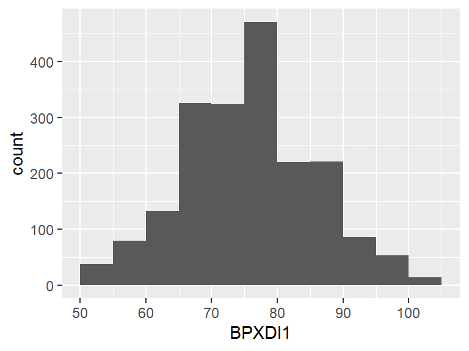
lab_missing
| Feature | Result |
|---|---|
| Variable type | integer |
| Number of missing obs. | 0 (0 %) |
| Number of unique values | 2 |
| Median | 0 |
| 1st and 3rd quartiles | 0; 0 |
| Min. and max. | 0; 1 |
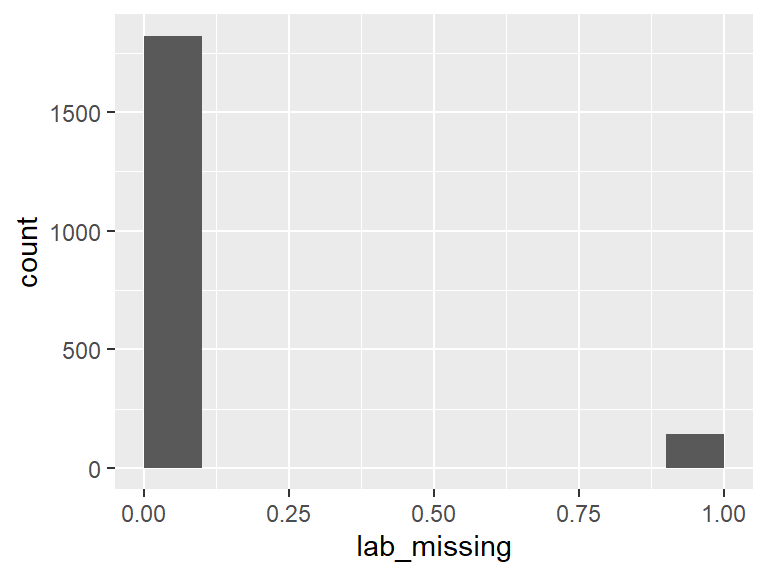
bp_missing
| Feature | Result |
|---|---|
| Variable type | integer |
| Number of missing obs. | 0 (0 %) |
| Number of unique values | 2 |
| Median | 0 |
| 1st and 3rd quartiles | 0; 0 |
| Min. and max. | 0; 1 |
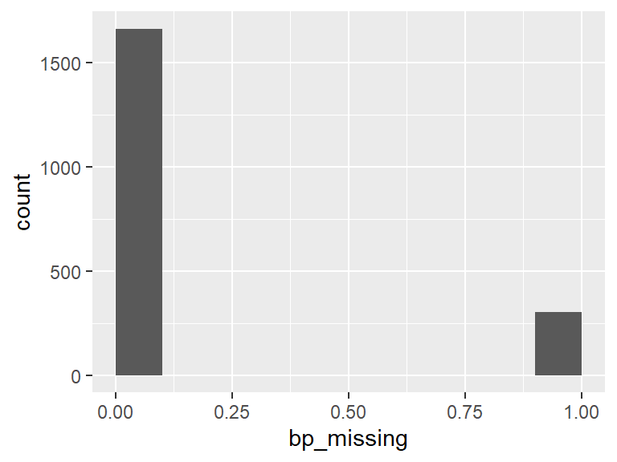
LBXBPB_clean
Blood lead after outlier removal
| Feature | Result |
|---|---|
| Variable type | numeric |
| Number of missing obs. | 0 (0 %) |
| Number of unique values | 252 |
| Median | 0.94 |
| 1st and 3rd quartiles | 0.61; 1.33 |
| Min. and max. | 0.12; 2.79 |
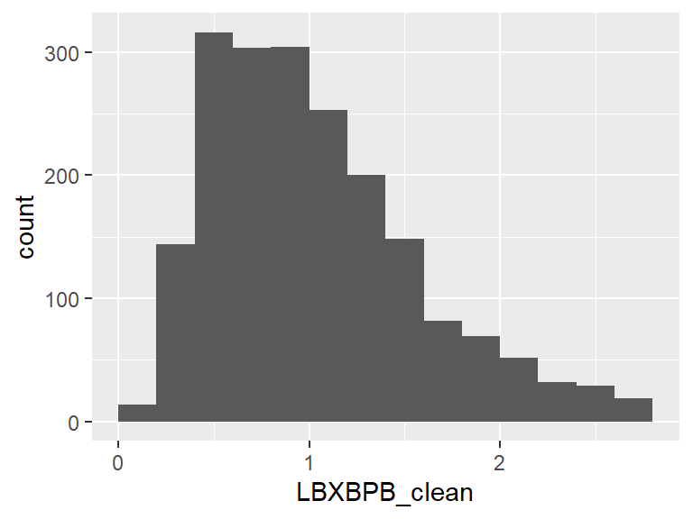
LBXBCD_clean
Blood cadmium after outlier removal
| Feature | Result |
|---|---|
| Variable type | numeric |
| Number of missing obs. | 0 (0 %) |
| Number of unique values | 111 |
| Median | 0.3 |
| 1st and 3rd quartiles | 0.18; 0.48 |
| Min. and max. | 0.07; 1.21 |
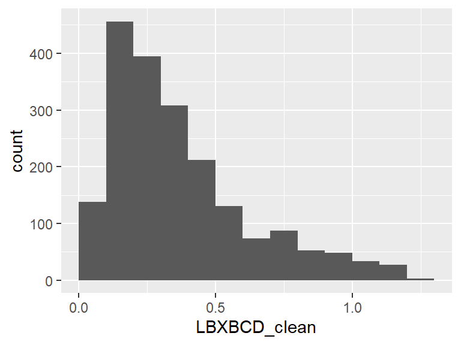
LBXBMN_clean
Blood manganese after outlier removal
| Feature | Result |
|---|---|
| Variable type | numeric |
| Number of missing obs. | 0 (0 %) |
| Number of unique values | 915 |
| Median | 9.32 |
| 1st and 3rd quartiles | 7.46; 11.51 |
| Min. and max. | 3.07; 18.34 |
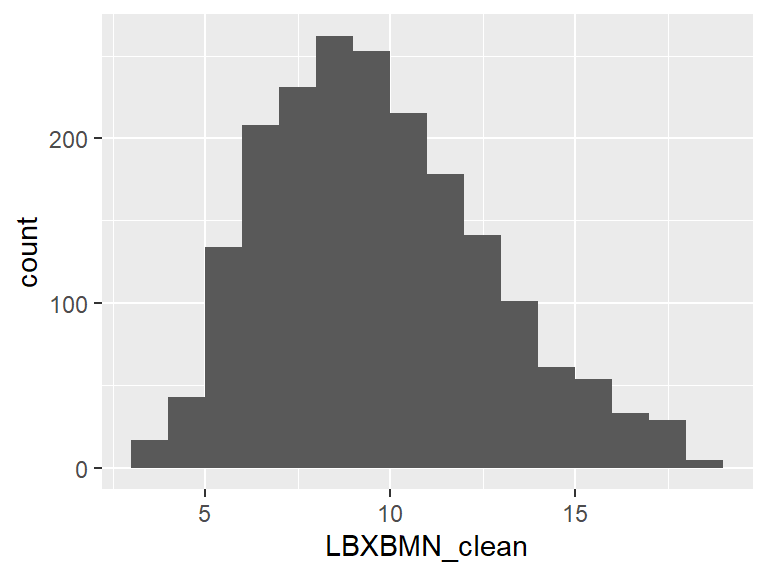
BPXSY1_clean
Systolic BP, first reading after outlier removal
| Feature | Result |
|---|---|
| Variable type | numeric |
| Number of missing obs. | 0 (0 %) |
| Number of unique values | 42 |
| Median | 126 |
| 1st and 3rd quartiles | 116; 138 |
| Min. and max. | 88; 170 |
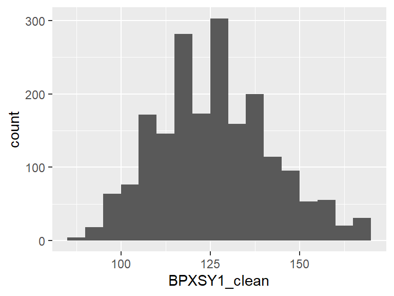
BPXDI1_clean
Diastolic BP, first reading after outlier removal
| Feature | Result |
|---|---|
| Variable type | numeric |
| Number of missing obs. | 0 (0 %) |
| Number of unique values | 28 |
| Median | 76 |
| 1st and 3rd quartiles | 70; 82 |
| Min. and max. | 50; 104 |
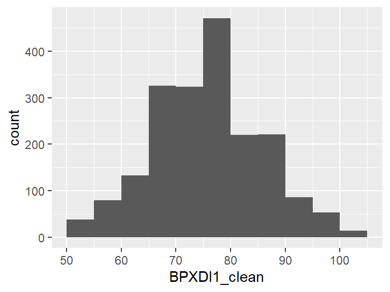
Report generation information:
Created by: SofiyaVyshnya (username:
User).Report creation time: Mon Sep 29 2025 17:01:49
Report was run from directory:
C:/Users/User/sofiyavyshnya/blog/posts/2025-09-27-ProjectA-TaskB/study2_analysesdataReporter v1.0.5 [Pkg: 2025-04-13 from standard (@1.0.5)]
R version 4.5.1 (2025-06-13 ucrt).
Platform: x86_64-w64-mingw32/x64(America/New_York).
Function call:
dataReporter::makeDataReport(data = nhanes_clean, output = "html", mode = c("summarize", "visualize", "check"), smartNum = FALSE, file = "C:/Users/User/sofiyavyshnya/data/study2/codebook.html", replace = TRUE, checks = list(character = "showAllFactorLevels", factor = "showAllFactorLevels", labelled = "showAllFactorLevels", haven_labelled = "showAllFactorLevels", numeric = NULL, integer = NULL, logical = NULL, Date = NULL), listChecks = FALSE, maxProbVals = Inf, codebook = TRUE, reportTitle = "Codebook for nhanes_clean")